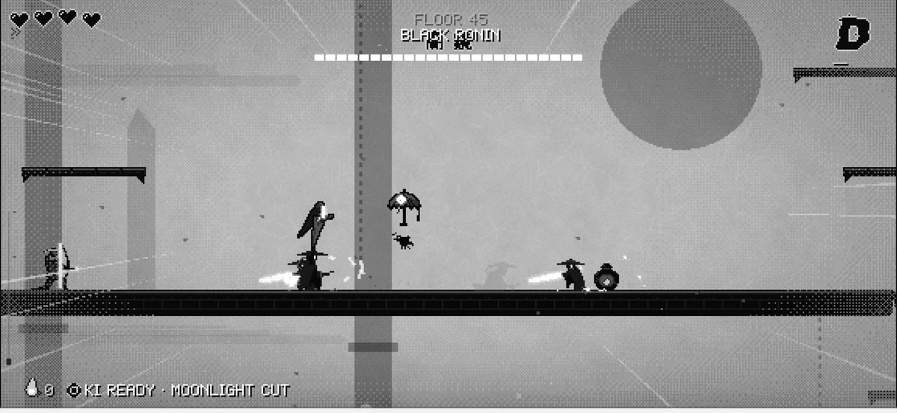
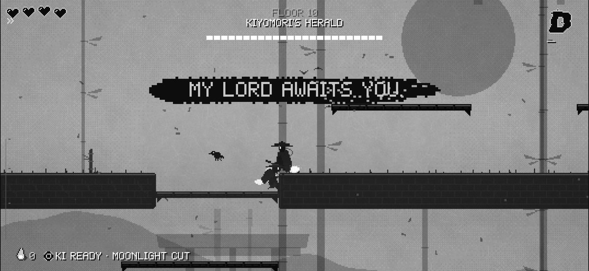
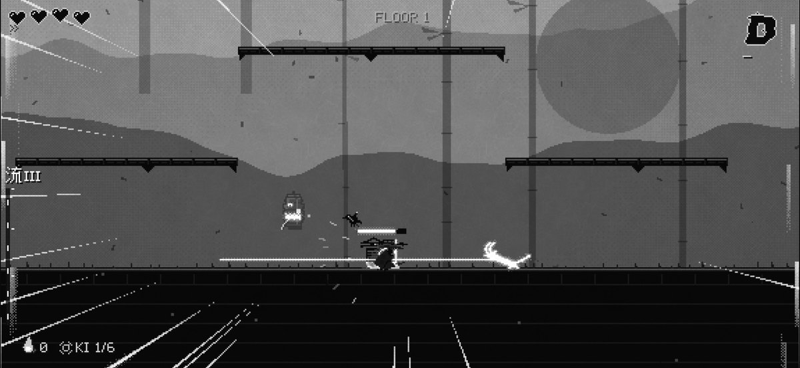
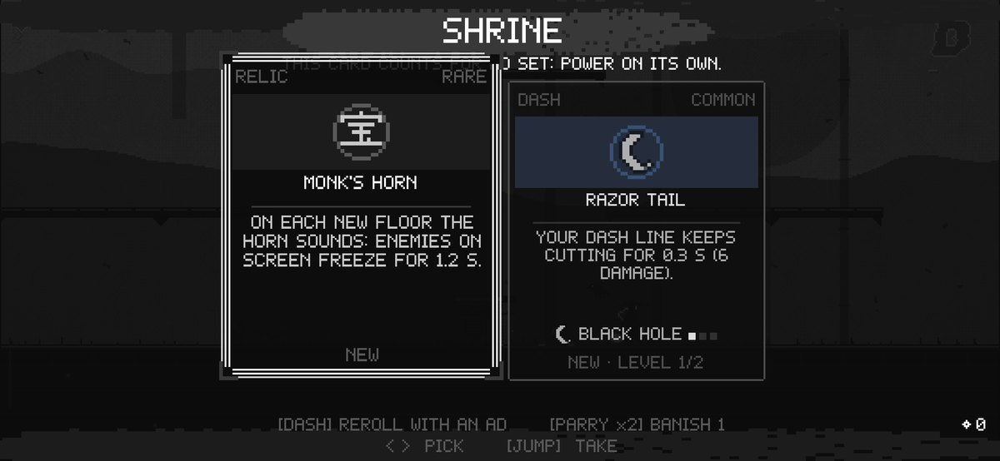
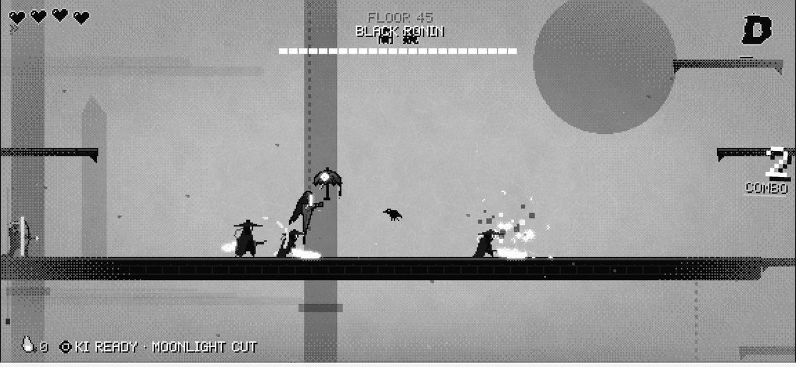
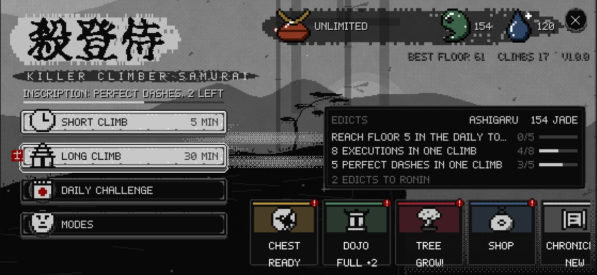
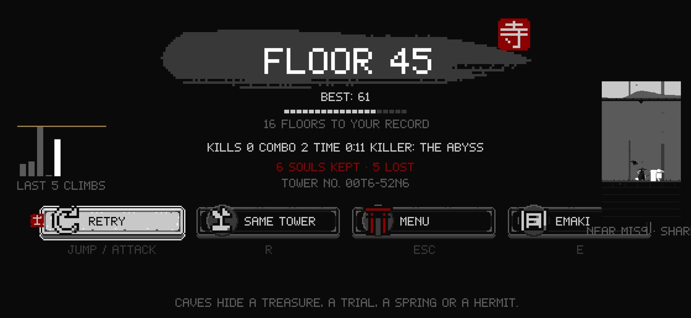
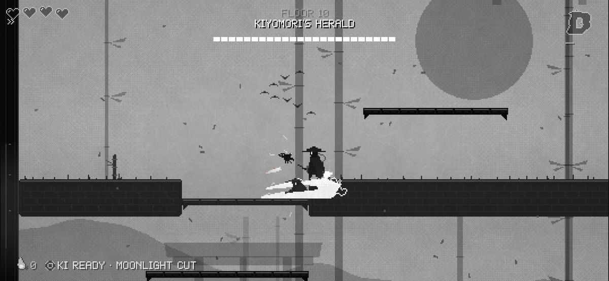
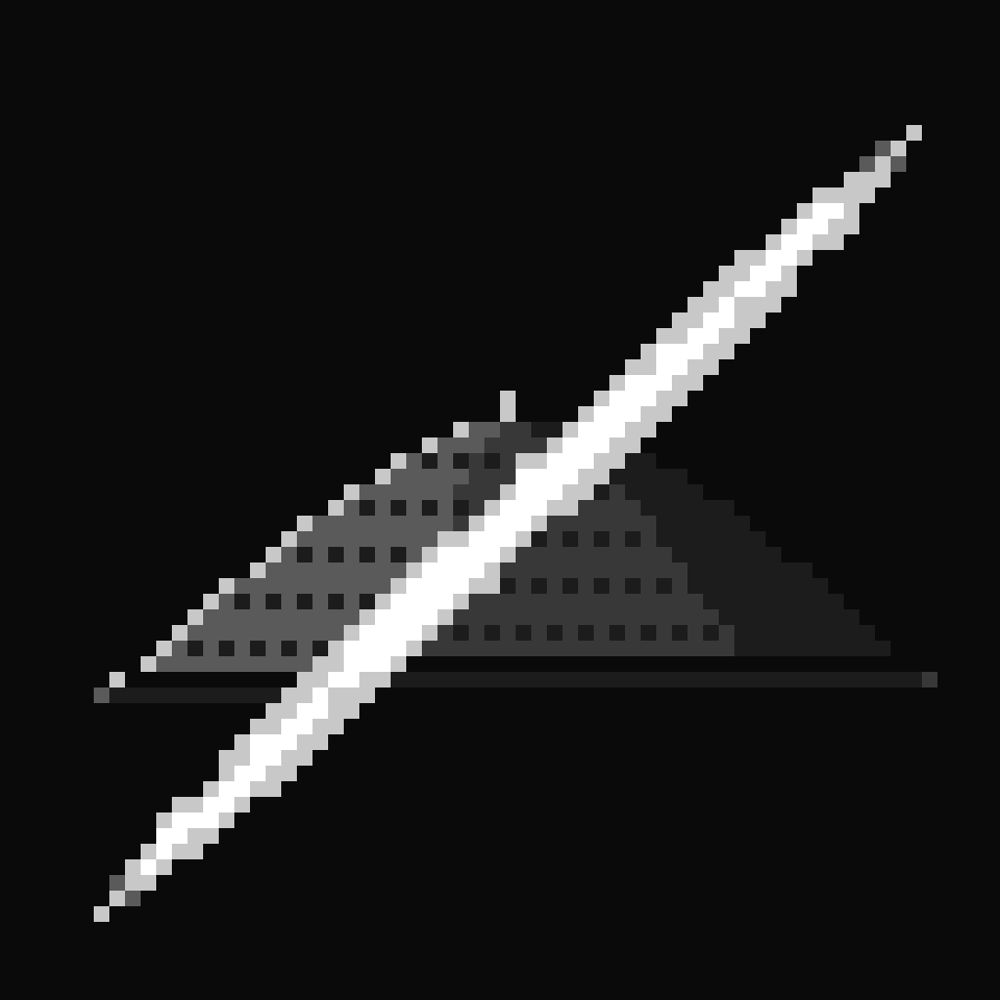

Killer Climber Samurai
Press kit · An ink-painted samurai roguelite for iPhone
The game
Downwell's vertical pace and Katana ZERO's one-hit edge, inside a sumi-e painting.
The tower changes shape every night. The shadow that killed your master waits at the top. One sword, one chance: die, and you fall back to the bottom, but you remember something.
- Fast, fluid combat: parry, dash, execute, air combos.
- Every climb is different: a procedural tower, 9 biomes, guardians and caves.
- Nine ink-painted biomes that breathe: lightning over the storm sea, eyes in the silk caves, lanterns rising over the night city.
- 70+ cards with sets, masteries, fusions and curses.
- The Soul Tree: 4 branches, 51 roots and 3 crowns of lasting growth.
- A daily challenge: everyone climbs the same tower.
- Photo mode and Best Moments: the finest kills saved as GIFs.
- Playable with one hand, with haptics and accessibility options.
Trailer
26 seconds, 1920×1080, the game's own sound. Download the MP4 (24 MB).
Store posters


Screenshots
















Each image links to the full-size PNG (2796×1290).
Icon

About the developer
Akif Bay is an independent solo developer from Türkiye. Killer Climber Samurai is made in Unity and released on the App Store in eight store languages.
All images and video on this page may be used in coverage of the game. For interviews, questions or anything else, write to doktoburu@proton.me.
Türkçe kısa bilgi
Killer Climber Samurai, Türkiye'den tek kişilik geliştirici Akif Bay'in mürekkep resmi görünümlü samuray oyunu. Oyuncu her gece şekil değiştiren bir kuleye tek kılıçla tırmanıyor. 9 bölge, bölge bekçileri, 70'ten fazla kart ve 5 dakikalık kısa tırmanış var. Oyun App Store'da ücretsiz.
Bu sayfadaki görseller ve fragman haberlerde kullanılabilir. İletişim: doktoburu@proton.me